Walk the trail
Ten areas per course, drawn as places: Tidepool Flats, Cell City, Exam Summit. Each stop is a short set of questions on that unit's real topics. Clear the stops, face the boss, and the next area opens.
Every unit becomes a place. Every stop is five minutes of questions. Every area ends in a boss. StudyPlat notices what you actually get wrong and sends you back to it, instead of just marching you forward.
Sign in with Apple, Google, Microsoft or email. Your progress follows you to every device.
How it works
Short sessions you can finish on a bus, a map that shows how far you have come, and a coach that pays attention.
Ten areas per course, drawn as places: Tidepool Flats, Cell City, Exam Summit. Each stop is a short set of questions on that unit's real topics. Clear the stops, face the boss, and the next area opens.
Every answer is recorded against its topic. Practice ranks your weakest categories from what you have actually answered, and the drill behind each one asks about that topic, not the course at large.
A streak for turning up, gems for finishing, and a companion whose ability changes how a session plays. Cleared an area? The endless review at its foot keeps going as long as you want it to.
Inside the app
Controls float above the trail and let it show through. Light and dark, on your phone or in a browser.
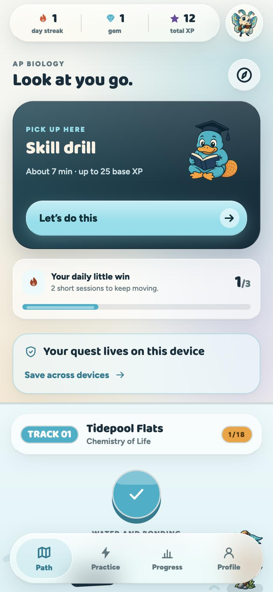


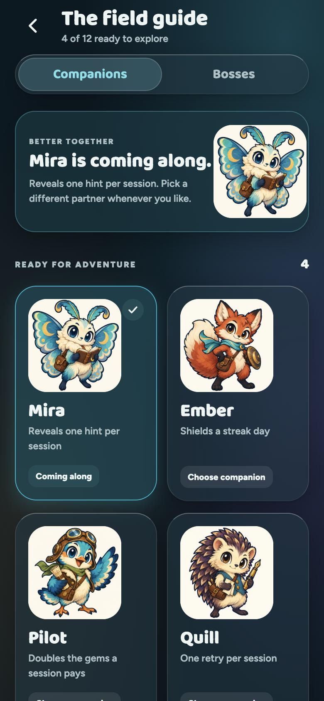
The cast
Twelve companions, each with one ability that actually does something in a session.
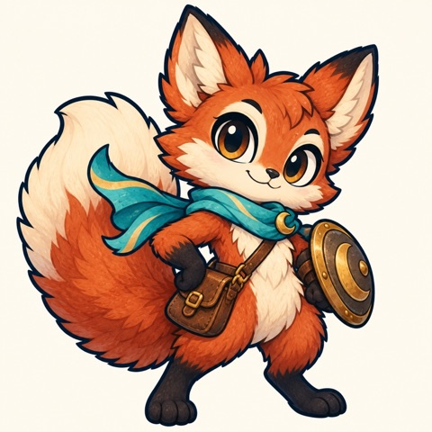
EmberShields a streak day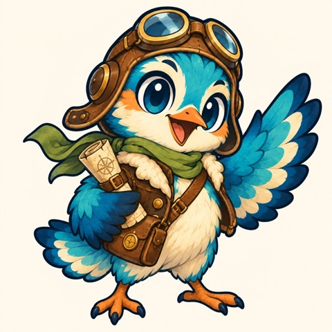
PilotDoubles the gems a session pays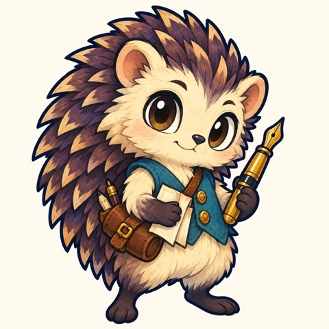
QuillOne retry per session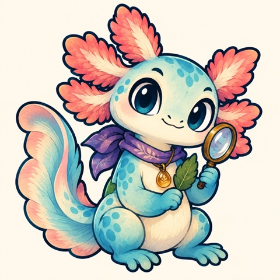
NixStrikes out one wrong optionAnd them
Every area ends in six fights that climb in rank. These are the guardians of Tidepool Flats, the first area of AP Biology. Beat the Overlord and the next part of the map opens.
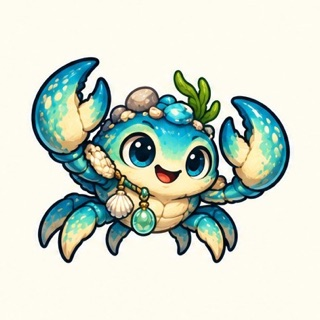
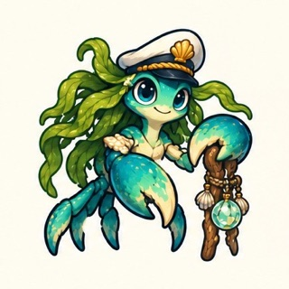
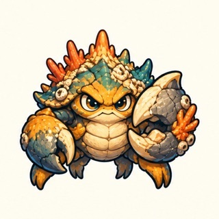
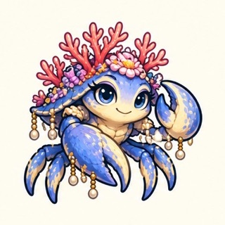
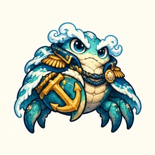
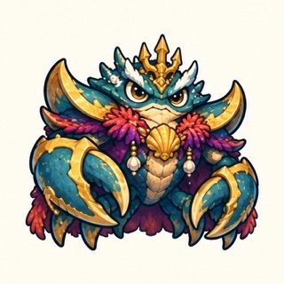
Courses
Each built from that course's published unit outline, with 120 original practice questions.
Privacy
No advertising. No purchases. No subscriptions.

Pick a course, take a short placement, and start walking.
Every question is original practice material written against each course's published unit outline. None of it is real exam content, and none of it is reproduced from the College Board. StudyPlat is independent and is not affiliated with, endorsed by, or approved by the College Board.